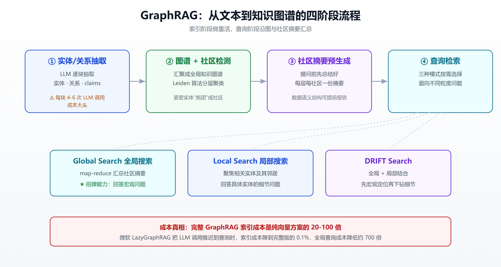
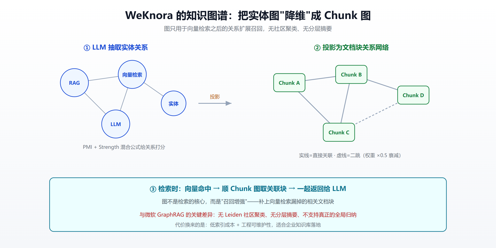

你真的需要 GraphRAG 吗？微软开源方案的原理、成本与选型指南（2026）
2024 年初，一家法律科技公司想给 5GB 的合同语料做一套"能回答宏观问题"的检索系统。他们选了微软刚开源的 GraphRAG，跑完索引，账单出来是约 3.3 万美元。同样一批文档，用普通向量检索建索引只要几十美元。
一年半后的今天，微软自己推出的 LazyGraphRAG 把这笔账砍到了 约 33 美元——整整降了三个数量级。
这个从 3.3 万到 33 的故事，浓缩了 GraphRAG 这项技术的全部张力：它确实能做到普通 RAG 做不到的事，但代价一度高得离谱。于是问题就变成了标题里那句——你真的需要 GraphRAG 吗？
这篇文章不吹也不黑，从原理讲到成本，再到开源生态和腾讯 WeKnora 这类国内轻量方案的对比，帮你把这个选型问题彻底想清楚。
一、GraphRAG 到底解决了什么问题
要理解 GraphRAG，得先明白普通向量 RAG 的天花板在哪。
传统 RAG 的逻辑是"切块 → 向量化 → 相似度召回 → 塞给大模型生成"。它擅长回答局部性问题——"这份合同的违约金条款是什么"，因为答案就藏在某几个文档块里，向量检索能精准命中。
但它对全局性问题几乎无能为力，比如：
- "这批文档整体反映了哪些主要主题？"
- "过去三年公司战略的核心转变是什么？"
- "这份研究语料里最重要的几个结论及其相互关系是什么？"
这类问题的答案不在任何单个文档块里，而是分散在整个语料中、需要归纳汇总。向量检索只会返回 top-K 个最相似的碎片，模型看到的是一堆孤立的片段，自然给不出全局洞察。微软在论文里把这类需求称为 query-focused summarization（面向查询的摘要） 或 global sensemaking（全局意义构建）。
GraphRAG 的出发点就是补上这块短板。它是微软研究院开源的、基于图的检索增强生成系统，核心论文是 《From Local to Global: A Graph RAG Approach to Query-Focused Summarization》（arXiv:2404.16130），代码在 github.com/microsoft/graphrag，2024 年 7 月初正式开源，一个月内就拿下 13k+ stars，如今仍在活跃迭代（版本已到 v3.x）。
二、原理拆解：从文本到知识图谱再到分层摘要
GraphRAG 的精髓在于索引阶段做重活，用大模型把非结构化文本"炼"成一张带层级结构的知识图谱。整个流程可以拆成四步。

1. 实体与关系抽取
对每个文本块，用 LLM 抽取出其中的实体（人、组织、概念等）、关系（实体之间如何关联）以及声明（claims）（关于实体的事实性陈述）。这一步是成本大头——每个块通常需要 4-6 次 LLM 调用。
2. 图谱构建与社区检测
把抽出的实体和关系汇聚成一张全局知识图谱，然后用 Leiden 算法做社区检测（community detection）。社区就是图里联系紧密的实体子群——就像社交网络里，你的大学同学彼此认识、你的同事彼此认识，但两群人之间往来很少。社区检测会自动把这些"抱团"的实体分出来，而且是分层的：小社区聚成大社区，形成一棵层级树。
3. 社区摘要预生成
对每一层、每一个社区，提前用 LLM 生成一份摘要（community summary）。这是 GraphRAG 最关键的设计——它在用户提问之前，就已经把"数据的语义结构"总结好了。这也意味着，GraphRAG 甚至能在没有任何查询的情况下，就报告出整个语料的宏观结构。
4. 查询阶段：三种检索模式
- Global Search（全局搜索）：面向宏观问题。用 map-reduce 方式，让每个社区摘要各自生成一份局部回答，再把所有局部回答汇总成最终答案。这是 GraphRAG 相对向量 RAG 的招牌能力。
- Local Search（局部搜索）：面向具体实体的细节问题，聚焦相关实体及其邻居。
- DRIFT Search：2024 年 10 月新增，把全局与局部结合，先用社区信息做宏观定位，再下钻到局部细节，兼顾质量与效率。
一句话概括：普通 RAG 是"问题 → 找相似片段 → 答"，GraphRAG 是"问题 → 沿着预先构建的知识图谱和社区摘要 → 汇总答"。
三、效果有多好，成本有多高
效果：全局问答确实是碾压
在需要全局理解的任务上，GraphRAG 相对朴素 RAG 在答案的全面性（comprehensiveness）和多样性（diversity）上有实质提升，这是微软论文的核心结论。第三方评测（Trantor）给出的数据是：在部分企业场景中，图谱增强方案的准确率可达约 80%，而传统向量 RAG 约为 51%，企业基准上约有 3.4 倍提升。这类数字因数据集而异，不能照搬，但方向是清楚的——关系型、多跳、全局归纳类的问题，GraphRAG 有明显优势。
成本：一度是劝退级别的
代价也很直接。据 Spheron 的分析，每个源文本块需要 4-6 次 LLM 调用做实体和声明抽取，使得 GraphRAG 的索引成本是纯 embedding 方案的 20-100 倍。文章开头那个 5GB 法律语料 3.3 万美元的例子（Medium 分析）就是极端写照。
更麻烦的是隐性成本。有工程团队（Levitation）指出，除了抽取本身，chunking、图物化（graph materialization）、社区摘要生成都会持续消耗云资源，"纸面上便宜、实际烧钱"。
微软的自救：LazyGraphRAG
2024 年 11 月 25 日，微软发布了 LazyGraphRAG，思路是把几乎所有 LLM 调用推迟到查询时——索引阶段不再预抽实体和预生成社区摘要，而是像向量 RAG 一样轻量建索引，等真正有查询来了再按需做图相关的计算。
微软给出的数字很惊人：LazyGraphRAG 的数据索引成本与向量 RAG 持平，仅为完整 GraphRAG 的 0.1%，全局查询成本降低约 700 倍，而答案质量与完整 GraphRAG 相当。那个 3.3 万美元的语料，用 LazyGraphRAG 索引降到约 33 美元。
这本质上是在说：完整 GraphRAG 那套"全量预计算"对很多场景是过度设计的。 这一点，后面聊选型时会反复出现。
四、开源生态：GraphRAG 已成一种范式
微软 GraphRAG 火了之后，"知识图谱 + RAG"迅速从一个项目演变成一整个技术流派。目前主流的开源选择包括：
- 微软 GraphRAG：元老，功能最全、方法论最完整，但也最重、最贵。
- 港大 LightRAG（HKUDS，EMNLP 2025）：主打轻量快速，双层检索设计，社区活跃。
- nano-graphrag：约 1100 行代码的极简实现，易读易改，LightRAG 就是基于它起步的。
- 蚂蚁 TuGraph 系：国内较早的开源 Graph RAG 框架，背靠图数据库。
- 腾讯 Youtu-GraphRAG（ICLR 2026）、TigerGraph GraphRAG 2.0 等：各有侧重。
选择变多，但核心分歧其实只有一个：图到底要做多重？ 微软 GraphRAG 站在"最重"的一端（全量社区聚类+分层摘要），nano-graphrag、LightRAG 往轻量走，而接下来要重点讲的腾讯 WeKnora，则代表了另一种更"克制"的思路。
如果你想横向了解更广的 RAG 与知识图谱工程实践，可以参考我们之前的 大模型知识图谱与图原生 Agent 和 BM25 与向量混合检索的规模化实践。
五、对照组：腾讯 WeKnora 的知识图谱是怎么做的
很多人会问：腾讯开源的 WeKnora 里也有知识图谱构建，也能和 RAG 结合，它跟微软 GraphRAG 到底差在哪？这个对比特别适合用来帮你做选型，因为两者代表了图谱增强 RAG 的两种极端哲学。
先说 WeKnora 是什么：它是微信团队 2026 年开源（MIT 协议）的企业级知识库平台，支撑着微信"对话开放平台"的生产环境。它是个完整产品——Docker 一键部署、Web 管理后台、REST API、内置 Ollama 支持、自主推理 Agent、自更新知识库。知识图谱只是它众多能力中的一个可选检索增强模块，而不是全部。想了解 WeKnora 作为知识库平台的整体定位，可以看 WeKnora vs Dify/RAGFlow/FastGPT 横评。
根据腾讯云开发者社区对 WeKnora 源码的拆解（对应 internal/application/service/graph.go），WeKnora 的 KG 实现可以概括为四步：

- 实体抽取：并发跑（限并发 4），每个文本块一次 LLM 调用抽出实体，按标题去重合并，同名实体只追加来源块 ID。
- 关系抽取：每 5 个块一批，把这批的实体和文本一起交给 LLM 抽
Source→Target关系。 - 权重计算：用 PMI（点互信息）+ Strength 混合公式给关系打分——PMI 衡量两个实体"超出随机共现"的关联强度，Strength 是 LLM 给的强度评分。
- 构建 Chunk 图谱：这是 WeKnora 最关键也最"取巧"的一步——它不直接检索实体图，而是把实体关系"投影"成文档块之间的关系网络。检索时向量命中某个块后，顺着这张 chunk 图取出关联度最高的若干块一起返回，支持直接关联和二跳查询（二跳权重乘 0.5 衰减）。
看出区别了吗？WeKnora 的知识图谱本质是"实体图 → Chunk 图"的降维用法：它用 LLM 抽实体关系，但最终落点是"哪些文档块彼此相关"，图只用来在向量检索之后做一层关系扩展召回。它没有社区聚类、没有分层摘要、没有全局 map-reduce——也就是说，它刻意放弃了 GraphRAG 那个招牌的全局 sensemaking 能力。
下面这张表把两者的差异摆清楚：
| 维度 | 微软 GraphRAG | 腾讯 WeKnora 的 KG |
|---|---|---|
| 图的角色 | 检索的全部核心 | 向量检索之后的扩展召回补充 |
| 抽取内容 | 实体 + 关系 + claims | 实体 + 关系（无 claims） |
| 社区聚类 | ✅ Leiden 分层社区 | ❌ 无 |
| 社区摘要 | ✅ 预生成分层摘要 | ❌ 无 |
| 全局问答 | ✅ Global map-reduce（招牌） | ❌ 不支持真正的全局归纳 |
| 多跳能力 | Local / Global / DRIFT | 直接关联 + 二跳（0.5 衰减） |
| 关系权重 | 图算法 | PMI + Strength 混合公式 |
| 索引成本 | 极高（每块 4-6 次 LLM 调用） | 相对低（每块 1 次实体 + 每 5 块 1 次关系） |
| 最终检索单元 | 实体 / 社区 | 文档块（chunk） |
| 项目定位 | 检索范式研究项目 | 生产就绪的企业知识库平台 |
关键结论：这两者根本不在一个层面竞争。 WeKnora 的 KG 是刻意做轻的，它用低索引成本和工程可维护性，换掉了 GraphRAG 那个昂贵的全局理解能力。而这恰恰揭示了选型的核心判断标准。
六、选型指南：三个问题决定你要不要 GraphRAG
别被"知识图谱"这个词唬住。要不要上完整 GraphRAG，问自己三个问题就够了。
问题一：你的查询是全局型还是局部型？
这是最关键的一条。诚实地统计你的真实查询：
- 如果绝大多数是"找具体答案"（某个条款、某个参数、某个事件的细节），那么向量 RAG 或带 chunk 图扩展的方案（如 WeKnora）就够了，上完整 GraphRAG 是杀鸡用牛刀。
- 如果你有大量"归纳整个语料"的需求（主题分析、趋势总结、跨文档的宏观洞察），那 GraphRAG 的社区摘要 + Global Search 是目前最成体系的方法，别的方案替代不了。
正如 TheRoadToEnterprise 所言：如果你的查询本来就不是关系型的，GraphRAG 只会平添抽取成本和维护负担，去支撑一个你极少用到的能力。
问题二：你的问题需要多跳推理吗？
"A 公司的 CEO 曾经在哪家公司任职，那家公司又被谁收购了"——这种需要沿着实体关系走好几步的问题，是图结构的主场。如果你的问题大多是单跳的（直接从一段文本就能答），图带来的收益有限。如果确实多跳，那么至少需要 WeKnora 那种二跳扩展，重度多跳则考虑完整 GraphRAG。
问题三：你的预算和数据规模匹配吗？
- 数据量大 + 预算有限：优先考虑 LazyGraphRAG 或 WeKnora 这类轻量方案，把 LLM 调用推迟到查询时或只用于召回增强，别一上来就全量预计算。
- 数据量适中 + 追求极致全局质量：完整 GraphRAG 值得投入。
- 要快速落地一个能用、能维护的企业知识库：直接选 WeKnora 这类成品平台，别自己从零搭图谱管线。
一张决策速查
| 你的场景 | 推荐方案 |
|---|---|
| 主要是找具体答案的问答 | 向量 RAG（可选混合检索） |
| 企业知识库、要快速落地和维护 | WeKnora / RAGFlow 等成品平台 |
| 需要召回增强、轻度多跳 | WeKnora 的 chunk 图 / LightRAG |
| 大规模语料 + 预算敏感 + 要全局 | LazyGraphRAG |
| 尽调 / 情报分析 / 文献综述等重全局归纳 | 完整微软 GraphRAG |
小结
回到标题那个问题——你真的需要 GraphRAG 吗？
对多数团队来说，答案可能是"不需要完整版"。GraphRAG 的价值真实且独特：它是目前把"全局意义构建"这件事做得最系统的方法论，社区聚类 + 分层摘要 + Global Search 这套组合，是向量检索的天然盲区。但它的完整形态代价高昂，微软自己都用 LazyGraphRAG 把成本砍了三个数量级来"自救"，这本身就说明全量预计算对很多场景是过度设计。
腾讯 WeKnora 的做法给了另一个启发：图不一定要做得那么重。把实体关系降维成 chunk 图、只用来做召回增强，放弃全局归纳能力，换来低成本和工程可维护性——对 90% 的企业问答场景，这套够用且便宜。
所以更聪明的工程实践，往往是"抄 GraphRAG 的思想，用 WeKnora 的克制"：理解图能带来什么，然后只为你真正需要的那部分能力付费。要研究 RAG 的深水区、要做需要宏观洞察的产品，就深入 GraphRAG;要落地一个便宜好用的知识库，就选轻量路线。技术选型的本质，从来不是选最强的，而是选最匹配的。
免责声明
本文所涉数据、成本估算与性能对比均来自公开资料与第三方评测，不同数据集、模型与部署环境下结果会有显著差异，文中数字仅供参考，不构成任何选型或投资建议。请以各项目官方文档和你自己的实测为准。
参考来源
- From Local to Global: A Graph RAG Approach to Query-Focused Summarization (arXiv:2404.16130)
- microsoft/graphrag GitHub 仓库
- LazyGraphRAG: Setting a new standard for quality and cost（微软研究院）
- Introducing DRIFT Search（微软研究院）
- GraphRAG: New tool for complex data discovery now on GitHub（微软研究院）
- Deploy GraphRAG on GPU Cloud（Spheron，索引成本 20-100 倍）
- Beyond Chunk-and-Embed（Medium，5GB 语料成本对比）
- Why GraphRAG Deployment Burns Cloud Credits（Levitation）
- Do You Need a Knowledge Graph?（TheRoadToEnterprise）
- Knowledge Graphs for Enterprise AI（Trantor，准确率对比）
- Tencent/WeKnora GitHub 仓库
- GraphRAG 知识图谱在 WeKnora 中的实现（腾讯云开发者社区，源码拆解）
延伸阅读
- 大模型知识图谱与图原生 Agent
- WeKnora vs Dify/RAGFlow/FastGPT 企业知识库横评
- BM25 与向量混合检索的规模化实践
- 开源向量数据库选型对比
- RAG 数据泄露的四条链路与防御
推荐搭配装备
善其事，利其器。以下硬件能最大化你的AI体验👇
🔗 通过以上链接购买可支持本站持续运营 🙏